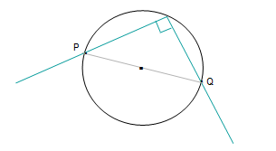

Put another way: If a triangle has, as one side, the diameter of a circle, and the third vertex of the triangle is any point on the circumference of the circle, then the triangle will always be a right triangle.
In the figure above, no matter how you move the points P,Q and R, the triangle PQR is always a right triangle, and the angle ∠PRQ is always a right angle.

The converse of Thales Theorem is useful when you are trying to find the center of a circle. In the figure above, a right angle whose vertex is on the circle always "cuts off" a diameter of the circle. That is, the points P and Q are always the ends of a diameter line.